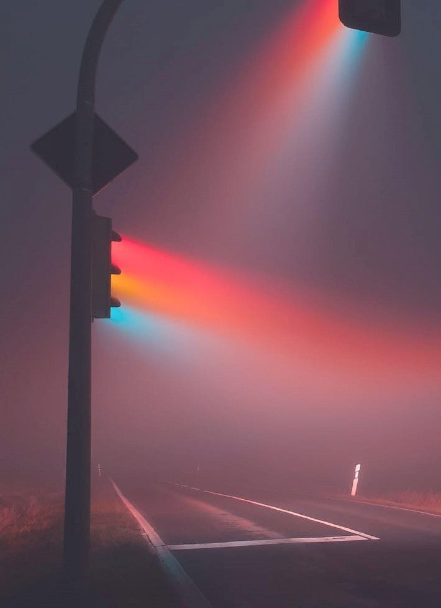

Experiencing Colors
Colors make the world flavorful. We strongly connect them to our emotions. They convey messages beyond words. If you are lucky enough to perceive colors, why don't you learn how you do so?
There are cones and rods in the photoreceptor layer in the retina. These are cells that have special proteins that are called opsins, which are light-sensitive and cause color perception and color discrimination.
Color discrimination (differentiating colors) can occur by having only rods and one type of color receptors, but the whole experience requires at least three types of photoreceptors. It was found that besides rods that contain rhodopsin, the human eye also has three different types of cone cells. These are S-cones (short wavelength), M-cones (midium wavelength) and L-cones (long wavelength). All cones have the same structure but differ in the type of cone opsin it has. S-cones contain Cyanolabe, M-cones contain Chlorolabe, and L-cones contain Erythrolabe. Each of these respond to a specific range of wavelengths and creates signals, the intensity or strength of the signal is determined by the sensitivity of the cell and intensity of the light, these directly affect a thing called 'quantum catches' which is defined as the number of photons a photorecptor can catch.
The latter fact is agreed upon in the scientific community, but the way the colors are mixed remains unknown but there are two theories about color vision, Young-Helmholt's trichromatic theory, and Opponent colors theory. What theory is followed affects explaining where the mixing happen, but the process reamins the same.
It is also worth mentioning that the number of cones and arrangement of them cause better or worse abilities to define and discriminate colors. The more cones you have, the less space there is between them, which affects the optical resolution of the colors, that causes an individual's brain to recieve more specific signals and allows new colors to appear. Human eye can experience a range of wavelengths as one color, and this causes what is known as metameres in colorimetry.
The irregularities of cones can cause color deficiencies or abnormal abilities. Some people lack a type or more of cones, which makes them color blind. However, rarely some people have a fourth kind of photoreceptors, making them tetrachromatic and allowing them to experience a wider range of colors (these colors cannot be generated by a computer, as a computer works as trichromatic color generator).
Remembering that color vision is a gift, and that a lot of people did not get the chance to percieve color, and that they live with confusion almost on daily bases, makes us grateful. Therefore, this website is dedicated for people who are able to survive without experiencing colors in this colorful world.